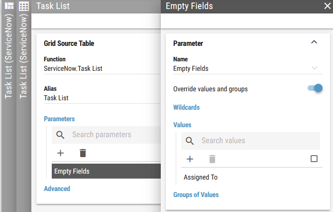
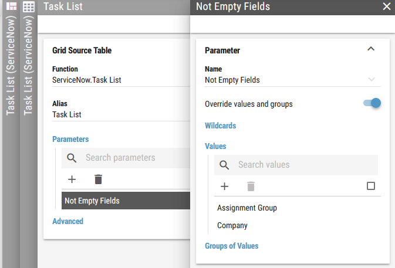

Task List¶
This Grid function displays task details.
All data for this function is collected using ServiceNow Table API.
Columns¶
Assigned Group – the group assigned to the task.
Company – the company assigned to the task.
Due Date – the date when the task should be resolved.
Last Touch – the time when the task was last modified.
Minutes Left – the amount of minutes remaining until the task should be resolved.
Priority – the priority of the task.
Priority Id - the priority number of the task.
Short Description – the short description of the task.
State – the state of the task.
State Id - the ID of the task’s state.
Table Name - the task table.
Ticket Id - the ID of the task.
Ticket Number – the number of the task.
Calculation Parameters¶
Active - Set “Yes” for the active task and “No” for the inactive task.
Empty Fields - Filters tasks that have the specified items empty.
Exclude State - Filters tasks that do not have this states.
Minimum Priority - Filters tasks that have this priority or higher.
Not Empty Fields - Filters tasks that do not have the specified items empty.
State - Filters tasks that have this states.
Examples¶
Empty Fields
Filters tasks that have the specified items empty.
Example: Show tasks that are not assigned
Figure 1: Empty Fields
Minimum Priority
Filters tasks that have this priority or lower.
Example: Minimum Priority = 3 means tasks with priority 3,4,5,…
Not Empty Fields
Filters tasks that do not have the specified items empty.
Example: Show tasks that have a Company and a Assigned Group.
Figure 1: Empty Fields
Until the ServiceNow connector 8.3.2 version, the Task List grid was filtered by default. Old functionality of this grid was based on following parameters:
Parameter Active to
YesParameter Exclude State to
6,7Parameter Empty Fields to
Assigned ToParameter Minimum Priority to
0Parameter Not Empty Fields to
Short Description,Company
Column-mapped Parameters¶
Table - Table calculation parameter value
Assigned Group - Assignment Group calculation parameter value